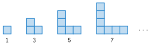

Apartado 4.1
Sucesiones y patrones
Muchas situaciones siguen un patrón que se repite: las butacas de cada fila de un teatro, los ahorros que acumulamos cada semana o los cuadrados que forman una figura que crece. Los números que describen esos patrones forman una sucesión.

En la figura de arriba, el número de cuadrados forma la sucesión \(1, 3, 5, 7, \ldots\) Cada figura tiene dos cuadrados más que la anterior.
4.1.1
Escribe los tres términos siguientes de cada sucesión:
- \(3, 7, 11, 15, \ldots\)
- \(2, 6, 18, 54, \ldots\)
- \(1, 4, 9, 16, \ldots\)